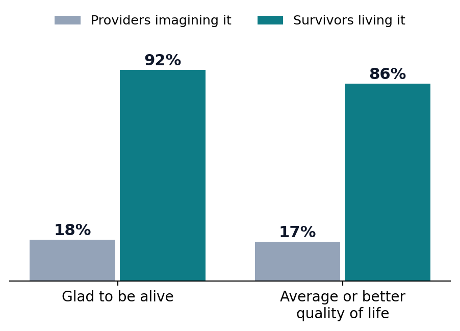
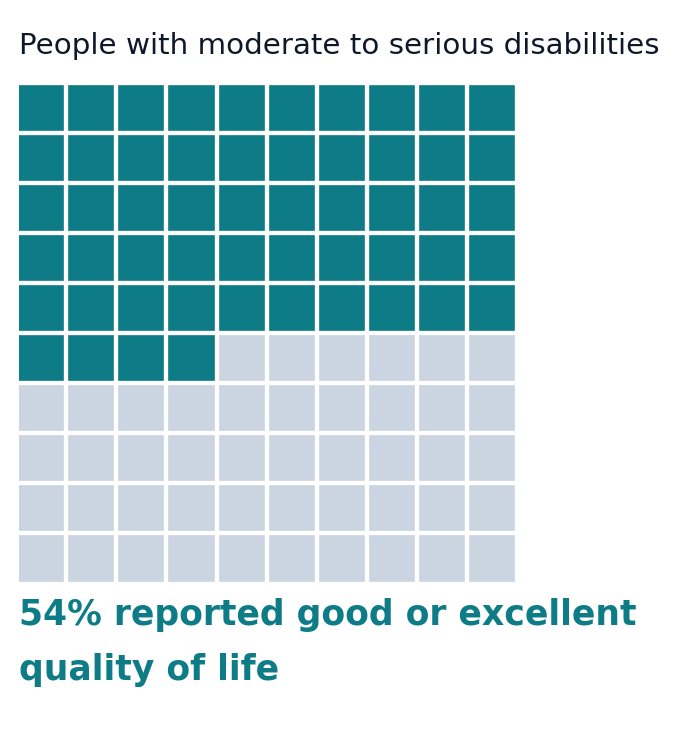
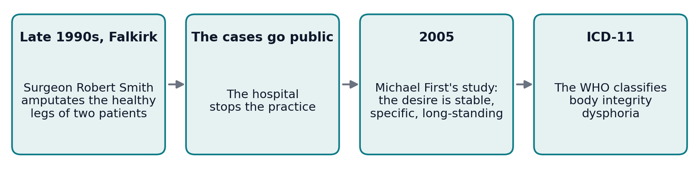
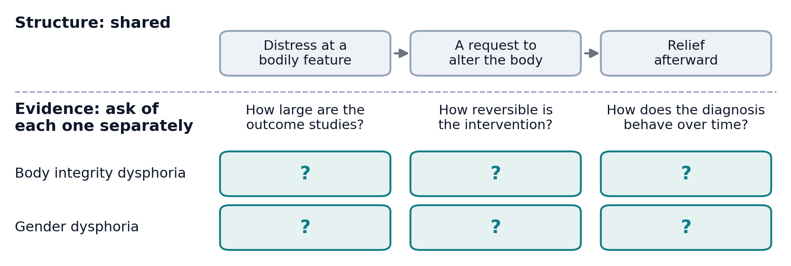
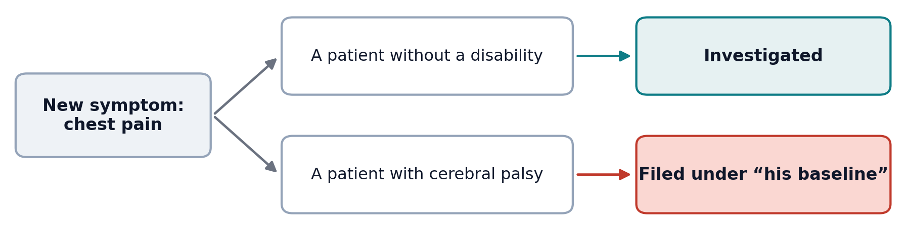
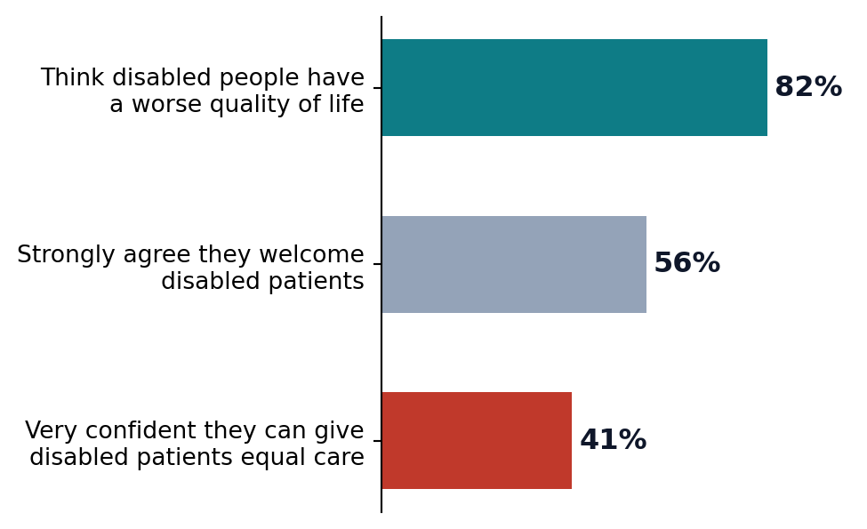

Lecture 11 — Gender, Identity & Disability
Part B: Disability, Identity, and the Limits of Autonomy
Brendan Shea, PhD
An Introduction to Bioethics.
A Prediction You’re About to Get Wrong
A Case to Sit With
You are the nurse admitting Daniel, 34, paralyzed from the chest down since a diving accident four years ago. The intake form asks for your impression of his quality of life, 0–10, before you’ve really talked to him.
Picture his life. Then write a number.
- What number did you put, and what was it based on?
- Daniel fills out the same scale an hour later. Will his number be higher than yours, lower, or the same? If his is much higher, which of you is wrong?
What Clinicians Guess, What Patients Say
Most clinicians put a low number. Most patients like Daniel put a high one, and the gap is large and well documented (Gerhart et al. 1994).
The gap shows our predictions are off. It does not settle whether disability is bad in itself, or simply a different way of having a body.
Today
One question runs through Part B: is disability bad in itself, or only bad because of how the world is arranged?
By the end of Part B, you will be able to:
- Distinguish the medical, social, and interactional models of disability, and explain the disability paradox.
- Lay out the mere-difference vs. bad-difference dispute, and apply it to selective abortion and to choosing a Deaf child.
- Evaluate the case for amputating a healthy limb on request, and test its analogy to gender dysphoria.
Three Ways to See a Disability
The Same Person, Three Lenses
First, a prior question: where does the problem live?
| Model | Where the problem lives | The fix it points to | Its blind spot |
|---|---|---|---|
| Medical | in the body: a deficit to diagnose | cure or correct the person | the building and the bus never come up for review |
| Social | in the environment: barriers and design | change the world, not the body | some burdens (pain, fatigue) no ramp can fix |
| Interactional | in the meeting of body and world | both, weighed case by case | demands judgment; there is no formula |
The medical model is the frame of the chart and the care plan. The others ask what it leaves out.
Same Body, Two Buildings
The social model, forged by disabled activists in the 1970s, splits impairment (a feature of your body) from disability (what a society does with that feature).
The wheelchair didn’t change between the two rows. The building did.

Curb cuts, won by wheelchair users, now serve strollers, suitcases, and bad knees. Ezekielf, via Wikimedia Commons. CC0 1.0.
Shakespeare’s “Both” Position
Tom Shakespeare says, from inside the disability movement, that the pure social model overreaches (Shakespeare 2006). Build every ramp in the world, and a degenerative condition still brings pain and fatigue.
- His interactional model: disability is real, and it is relational, produced where a particular body meets a particular world.
- Some of the burden is social and removable (the stairs). Some is intrinsic and stays (the pain).
- The honest question is how much of this burden is which, and the answer changes case by case.
The Disability Paradox
What Patients Report
In 1999, Gary Albrecht and Patrick Devlieger interviewed 153 people with disabilities. Outsiders, including health professionals, predicted the opposite of what they heard (Albrecht and Devlieger 1999).

- It is a “paradox” only from the outside, where people imagine the disability but not the life around it.
- Explanations: adaptation (people adjust), response shift (what counts as a good day rescales), and the relationships, work, and meaning a diagnosis never mentions.
- At the bedside, it is a patient-safety issue: a low prediction can steer counseling and even resuscitation decisions.
What the Paradox Does and Doesn’t Show
What it shows
Your quality-of-life predictions about disabled patients are systematically miscalibrated. Ask; don’t assume.
What it doesn’t show
That disability is no loss at all. Critics argue adaptation can mask real deprivation: a person can rescale “a good day” and report contentment while still being worse off on things that matter.
So the paradox unsettles the bedside, but it does not settle the philosophy.
Is Disability Bad in Itself?
Mere Difference or Bad Difference?
Is disability bad in itself, or only bad because of how the world is arranged?
Mere difference
Elizabeth Barnes: disability is a difference, like being gay or left-handed, not in itself a harm (Barnes 2016). Its burdens are largely social, and it can carry goods: community, perspective, skills.
Bad difference
Greg Bognar and others: disability is, on balance, a real bad that we have reason to prevent, even in a perfectly just society (Bognar 2016). A just world removes the stairs, not the condition.
Both sides accept the paradox data. They disagree about what it shows.
The Expressivist Objection
Prenatal screening lets parents test for conditions like Down syndrome and end the pregnancy. Adrienne Asch, a bioethicist who was herself blind, pressed the expressivist objection: selecting against a trait says something about people who live with it (Asch 1999).
What she did not argue
For banning abortion, or against reproductive choice. Her target was the framing: testing offered as routine, with disability described only as a list of deficits.
What she demanded
An honest picture of the life, not just the diagnosis: what a day with Down syndrome is actually like, from people who live it.
The Objection in Standard Form
The Expressivist Objection
After Adrienne Asch, “Prenatal Diagnosis and Selective Abortion” (1999)
- Selecting against a trait, because of that trait, acts on the judgment that it makes a life go worse.
- Doing that publicly, through medicine, sends a message about everyone who already lives with the trait.
- Disability does not make a life go worse in the way that message assumes.
- So routine selective abortion for disability sends a false and harmful message about disabled people.
The replies
- Declining this pregnancy need not be a verdict on existing people.
- It is the surrounding attitudes, not the bare choice, that carry a message.
Everything rides on premise 3. If disability is a bad difference, the “message” may be true rather than a slander.
Thought Question
A Deaf couple comes to your fertility clinic. Both are fluent in ASL and deeply embedded in the Deaf community. They ask to select an embryo that will be Deaf, as another couple might hope for a child who shares their language. You are on the clinic’s ethics committee.
- Is there something about you or your family (a language, a faith, a culture, a trait) that outsiders might count as a disadvantage, but that you would want your child to share?
- The committee has to vote. Do you allow it? Is selecting for Deafness morally different from selecting against it?

An ASL interpreter teaches the basics, RAF Mildenhall, 2018. U.S. Air Force photo by Brandon Esau. Public domain.
Choosing a Deaf Child
Some Deaf couples have sought to do exactly this. Savulescu’s procreative beneficence says no (Savulescu 2001).
Against Selecting for Deafness
After Julian Savulescu, “Procreative Beneficence” (2001)
- Choosing among possible children, parents have reason to pick the one expected to have the best life.
- Other things equal, a hearing child has access to goods (spoken language, more careers) that a Deaf child lacks.
- So, other things equal, parents have reason not to select for Deafness.
Note
The mere-difference reply attacks premise 2. Deafness opens a language and a community as much as it closes options. The lives aren’t ranked, just different.
Two Kinds of Reasons
A welfarist asks
Does the child’s life go well for the child?
A perfectionist asks
Is a capacity (hearing) worth having in itself, however content its absence leaves you?
Most “select out but not in” policies rely on a perfectionist premise (hearing is better, full stop) while presenting themselves as neutral. That doesn’t make the policy wrong. It locates its real commitment.
A Healthy Limb, and a Patient Who Wants It Gone
Body Integrity Dysphoria
Some people feel a persistent, distressing sense that a healthy limb is not theirs and should be removed: body integrity dysphoria.

When a competent adult calmly and persistently asks to remove a healthy part of their own body, what does respect for autonomy require?
What Autonomy Might Require
The Autonomy Argument for Amputation
After Tim Bayne and Neil Levy, “Amputees by Choice” (2005)
- A competent adult’s settled, informed request about their own body should normally be honored, even when others find it strange.
- The desire in body integrity dysphoria is competent, settled, and informed: stable for decades, not a delusion.
- Surgery reliably relieves the distress, and no other treatment reliably does.
- So refusing the amputation, not performing it, is what fails to respect the patient.
Pushback: premise 1 (removing healthy tissue may exceed a doctor’s role) and premise 3 (“nothing else works” is far from settled).
Two Colleagues, One Analogy
Colleague
Body integrity dysphoria and gender dysphoria have the same shape: distress at a bodily feature, a request to alter the body, relief when we do.
If we accommodate one, consistency demands we treat them alike.
Same shape, different substance. The analogy is a rhetorical trap.
Colleague
Thought Question
You sit on the hospital ethics board with them.
- Think of a time someone told you “that’s just like…” about two things you felt were different. What made the comparison fair, or unfair?
- Which colleague do you side with? What is the best point the other one has?
Same Structure, Same Evidence?

An argument that rides the shared structure all the way to “treat them identically” has skipped the evidential question. The analogy holds at the level of form and may break at the level of evidence.
Bringing It to the Bedside
The Paradox Has a Name in the Chart
Diagnostic overshadowing: blaming a patient’s new symptoms on their existing disability instead of investigating them as you would in anyone else.

The countermeasure is a habit: ask whether you’d order this workup for a patient without the disability, and if so, order it.
The Access Gap Is Measurable
Disabled patients get worse care, and not mainly because of their bodies.
- Exam tables that don’t lower and scales that can’t weigh a wheelchair user mean basics like cancer screening happen less often.
- In a 2021 national survey, most physicians believed disabled people have a worse quality of life, and fewer than half felt very confident they could give them equal care (Iezzoni et al. 2021).

How You Talk Is Part of the Care
Person-first or identity-first? “Person with a disability” puts the person first. “Disabled person” (and capital-D Deaf, Autistic) is claimed with pride by many. There’s no single correct form: ask, and use what the patient uses.
“Nothing about us without us.” At the bedside: speak to the patient, not the companion pushing the chair. Presume capacity. Ask what help they want before you give it.

Chona Kasinger for Disabled And Here. CC BY 4.0.
The Commitments Map
What each view would say about the three hard cases, not which view wins.
| Case | Mere difference would say… | Bad difference would say… |
|---|---|---|
| Selective abortion | screening framed as tragedy rests on a false premise | a real loss may be prevented, but the message still warrants care |
| Choosing a Deaf embryo | selecting for Deafness is coherent, like any valued trait | choosing a worse-off life for a child who can’t consent |
| Amputating a healthy limb | a settled identity claim deserving accommodation | distress to be treated, not a difference to affirm |
Read down a column: can either view hold up across all three cases? Read across a row: how much was fixed by a premise chosen early? The map decides nothing; it shows where the decision lives.
Wrap-Up
Is disability bad in itself, or only bad because of how the world is arranged? We began with a gap: clinicians predict low quality of life for disabled patients, and patients report high. That disability paradox unsettles the bedside but leaves the question open. We tracked mere difference and bad difference across selective abortion, Deaf embryo selection, and body integrity dysphoria, and tested the analogy to gender dysphoria by mapping it rather than asserting it. The disagreements are about premises and evidence, not about who cares more.
Review Questions
Recall
State the medical, social, and interactional models of disability in one sentence each, and say where each locates “the problem.”
Apply
A hospital is designing a survey that asks nurses to rate incoming patients’ quality of life. Using the disability paradox, name one concrete way this could harm disabled patients, and one safeguard you’d build in.
Debate
Should a competent adult with body integrity dysphoria ever be able to obtain surgery to remove a healthy limb? Defend your answer using the autonomy argument and at least one objection to it.
Key Terms
- Medical / social / interactional model — disability located in the body / in the environment / where the two meet.
- Impairment vs. disability — a bodily feature vs. what a society does to people who have it.
- Disability paradox — disabled people report far higher quality of life than outsiders, including clinicians, predict.
- Mere vs. bad difference — not in itself a harm (Barnes) vs. a genuine bad worth preventing (Bognar).
- Expressivist objection — selecting against a disability sends a message about people who have it (Asch).
- Procreative beneficence — parents should choose the possible child expected to have the best life (Savulescu).
- Welfarist vs. perfectionist — good for the person vs. worth having in itself.
- Body integrity dysphoria — persistent distress that a healthy limb is not one’s own (ICD-11).
- Diagnostic overshadowing — blaming a disabled patient’s new symptoms on their existing disability.
Further Reading
- Barnes, Elizabeth. The Minority Body: A Theory of Disability. Oxford University Press, 2016.
- Shakespeare, Tom. Disability Rights and Wrongs Revisited. Routledge, 2014.
- Johnson, Harriet McBryde. “Unspeakable Conversations.” The New York Times Magazine, 2003. (The disability-rights case against Peter Singer, by a lawyer who met him.)
References
Albrecht, Gary L., and Patrick J. Devlieger. 1999. “The Disability Paradox: High Quality of Life Against All Odds.” Social Science & Medicine 48 (8): 977–88.
Asch, Adrienne. 1999. “Prenatal Diagnosis and Selective Abortion: A Challenge to Practice and Policy.” American Journal of Public Health 89 (11): 1649–57.
Barnes, Elizabeth. 2016. The Minority Body: A Theory of Disability. Oxford University Press.
Bognar, Greg. 2016. “Is Disability Mere Difference?” Journal of Medical Ethics 42 (1): 46–49.
Gerhart, K. A., J. Koziol-McLain, S. R. Lowenstein, and G. G. Whiteneck. 1994. “Quality of Life Following Spinal Cord Injury: Knowledge and Attitudes of Emergency Care Providers.” Annals of Emergency Medicine 23 (4): 807–12. https://doi.org/10.1016/s0196-0644(94)70318-3.
Iezzoni, Lisa I., Sowmya R. Rao, Julie Ressalam, et al. 2021. “Physicians’ Perceptions of People with Disability and Their Health Care.” Health Affairs 40 (2): 297–306.
Savulescu, Julian. 2001. “Procreative Beneficence: Why We Should Select the Best Children.” Bioethics 15 (5–6): 413–26. https://doi.org/10.1111/1467-8519.00251.
Shakespeare, Tom. 2006. Disability Rights and Wrongs. Routledge.
Bioethics OER · CC BY-NC 4.0 · Brendan Shea